The X-VP Tutorials Explained
The tutorials included with the X-VP SDK are meant for
demonstration purposes only. The main goal of each one is to showcase a
specific concept or technique in the SDK. Therefore, to keep things
simple and straightforward, each tutorial only includes the code necessary to
demonstrate the subject at hand. There are many optimizations that can be
made to the tutorial source code. Also, the practices used by the
tutorials aren't the only way to do things with X-VP. They are good
starting examples, though. Feel free to experiment.
If applicable a screenshot will be included in each
description. That being said, the absolute best place to look to fully
understand each tutorial is of course, the source code. The source code
has been littered with tons of comments explaining what each section of code is
doing. In fact, the majority of the tutorial exists in the comments
inside the source code.
The recommended approach to working the tutorials is
to start from the beginning as later tutorials may use concepts presented in
earlier tutorials. The tutorials are structured in an outline format so
that related subject matter can be grouped
together. So, if you follow them in order, concepts will progress from
beginner to intermediate to advanced.
Keep in mind that the tutorials don't cover every
aspect of every subject presented. For example, there may be a tutorial
on lighting and although the tutorial focuses on point lights, it might not
cover other types of lights that X-VP supports like spot or directional
lights. See the X-VP API Reference and other documentation to dig deeper.
The art used in the tutorials can be found in the
common directory underneath the tutorials directory. This includes both
the exported files and the original 3D Studio Max files.
Section 1 - Rendering Fundamentals
This is where it all begins. This section
presents very basic rendering examples in X-VP as well as other general
concepts.
| |
1.1
This extremely simple tutorial shows an example of
using X-VP in a Windows application. There are no models or fancy special
effects, just an example of how to interface with X-VP inside of standard
Windows functions like WinMain() and WndProc(). It repeatedly clears the
color buffer to red just to let you know that it’s working. This tutorial
demonstrates engine initialization, engine shutdown and other common X-VP
runtime practices.
|
| 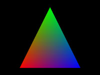 |
1.2
This tutorial creates a simple triangle in front of
the camera. Each triangle vertex is assigned a different diffuse
color. This tutorial demonstrates vertex buffer usage, index buffer
usage, material usage and simple rendering techniques.
|
| |
1.3
This tutorial shows how to texture a polygon. It
uses the triangle created in 1.2 and applies a simple 2D texture map.
This tutorial demonstrates texture management and application to geometry from
within X-VP.
|
| |
1.4
Up until now, rendering has been somewhat
tedious. That is, each render setting has been explicitly set by the
application before each render call. In this tutorial, we introduce
render states and show how they simplify and optimize the rendering of objects
be maintaining a snapshot of render settings for a graphics device.
|
| 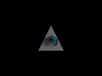 |
1.5
This tutorial explains how to use fixed-function
lighting techniques in X-VP by showing an example of a point light applied to
our triangle from previous tutorials. The point light is animated to
slowly fade in and out.
|
| 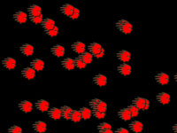 |
1.6
This tutorial introduces the sprite framework in
X-VP. It simply creates 50 sprites and randomly positions them on the
screen.
|
| |
1.7
This tutorial introduces animated sprites and how to
configure them. They fit into the sprite framework the same way as all
other sprites.
|
| |
1.8
This tutorial demonstrates how to playback
movies. Movies are also considered to be sprites by X-VP. They can
be added and removed from the scene like any other sprite.
|
| 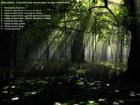 |
1.9
This tutorial shows the screen fading capabilities of
X-VP via the gamma controls of the monitor.
|
| 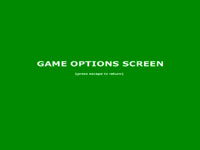 |
1.10
From here on out things begin to get more interesting.
In previous tutorials, our X-VP application has only had one state. We
did this to keep things clear and simple. Most X-VP applications;
however, will consist of more than one state. Typically, the larger the
application is, the more states it will have. Of course the number of
states and how they interact is completely up to the developer. This
tutorial creates several states to simulate a game framework including an intro
movie state, load game state, options state and of course the main game play
state. It illustrates how to navigate between states with X-VP.
|
Section 2 - Introduction to Scene Nodes, Controllers
and the Scene Graph
In section 1 we didn’t even mention the topic of
Scene Nodes and Controllers. We did this on purpose so that earlier
tutorials could be kept extremely simple. In section 2 and on, we will be
making heavy use of Scene Nodes and Controllers – and for good reason.
They are the workhorses of X-VP. X-VP’s flexibility and power are heavily
dependent upon the concepts introduced in section 2.
| 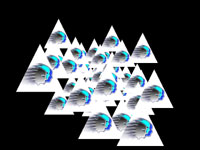 |
2.1
In this tutorial, we create our first Scene
Node. We’ll use our familiar triangle from previous tutorials and convert
it into a Scene Node that X-VP can understand. Once we’ve turned it into
a Scene Node, we’ll add 50 of them to the X-VP's Scene Graph just for
demonstration.
|
| 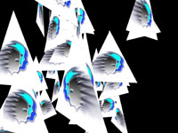 |
2.2
In 2.1, we created our first Scene Node. So, in
this tutorial, we’re going to create our first Update Controller. We’ll
create a Controller whose sole purpose is to spin geometry around its local Y
axis. (We’ll call it the Spin Controller) We’ll then attach Spin
Controllers to the triangle Scene Nodes we created in 2.1. This will
cause the 50 triangles to spin around their local Y axis when added to X-VP's
Scene Graph.
|
| 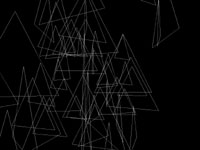 |
2.3
In this tutorial we create our first Render
Controller. To keep things fairly simple, we implement a Render
Controller that toggles the fill mode of the geometry it’s attached to between
wire and solid modes. We attach our new Render Controller to the triangle
Scene Nodes from before along with the Spin Controller from 2.2. The end
result is 50 spinning triangles who are toggling there fill mode between wire
and solid modes.
|
Section 3 - Models, Skin Meshes, and Other X-VP Objects
X-VP ships with several pre-built Scene Nodes and
Controllers. Section 3 is dedicated to these.
|
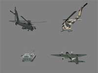 |
3.1
In this tutorial, we demonstrate how to load and add
models to X-VP’s Scene Graph. Several example models are included in the
tutorial distribution.
|
|
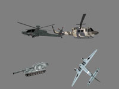 |
3.1.1
Using the 4 models from the previous tutorial, this
tutorial, shows how to animate objects within each model (as well as the model
as a whole) by attaching controllers to individual objects. It attaches a
controller that is capable of moving objects within their own object space.
For example, the helicopter models will have these
controllers attached to their rotor objects so they can spin. The plane
and tank models will have controllers attached to various objects like
propellers, turrets, etc.
Also, these controllers are attached to the model
space of each model so that each they can be rotated as a whole in their
respective model space. This makes it easier to view each model from all
angles.
|
|
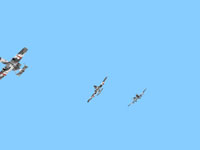 |
3.1.2
This tutorial uses the Animation Controller to animate
3 plane models with a flight animation.
|
|
|
3.1.3
This tutorial demonstrates how to attach other Scene
Nodes to a model and let the X-VP Scene Graph automatically calculate their
positions and orientations as the model moves. It uses the 3 plane models
from 3.1.2 and attaches a particle system to each engine of each plane as they
run through the flight animation..
|
 |
3.1.4
This tutorial demonstrates how to use the
LOD system in X-VP. An artist has generated 4 LODs for a model. The
model consists of 5 objects, a box and 4 spheres, however LOD levels have only
been generated for the box and 2 of the spheres. X-VP will automatically
search for LODs and attach them to the appropriate base geometry.
Models can have any or all of their objects
LODed and the level depths are allowed to vary independent of one
another. Once the LOD data is loaded and stored, the behavior of the
LODing system is controlled by the LOD controller which includes a default
algorithm using camera distance and FOV. This can easily be changed in a
number of ways.
LOD data is efficiently stored in the model
template and shared among all instances of that model. The LOD Controller
can control any number of model instances.
|
|
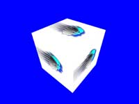 |
3.1.5
This tutorial demonstrates the Material
Animation Controller. Keyframes have been recorded of U and V offsets as
well as W rotation. A material animation controller is simply attached to
a model and used to play the material animation track.
The Material Animation Controller has the
same feature set as the Animation Controller. It can blend between
multiple tracks and control animation track properties like speed, weight, etc.
|
|
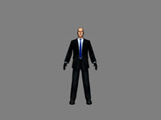 |
3.2
This tutorial introduces the Skin Mesh Scene Node in
X-VP. It loads an included skin mesh and adds it to the Scene Graph.
|
|
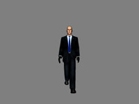 |
3.2.1
This tutorial shows how to use the Animation
Controller to play an animation track on a Skin Mesh. It uses the
character from the previous tutorial and plays a walking animation track on the
Skin Mesh.
|
|
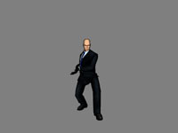 |
3.2.2
This tutorial shows how the Animation Controller can
blend between multiple animation tracks by weighting individual tracks.
It applies 2 tracks to the skin mesh from previous tutorials and lets you blend
between them using the cursor keys.
One animation track is an idle animation as if the
character is standing still holding a gun (even though there is no gun
attached) and bouncing slightly. The other animation is a full walk
cycle. The up and down cursor keys can be used to blend slowly between
the animations.
|
|
|
3.2.3
This tutorial shows how to use a Physics Controller to
move the Skin Mesh around in world space. It uses the character from
previous tutorials. The Skin Mesh’s model space is moved around while
playing the walk animation via the Animation Controller to show how to create a
realistic walking motion.
You can move the character and make him walk by using
the cursor keys.
|
|
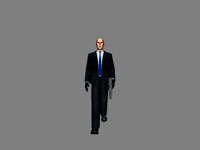 |
3.2.4
This tutorial shows how to dynamically attach Scene
Nodes to others. Specifically, it attaches a gun model to the hands of
the Skin Mesh character from previous tutorials. The gun model can be
moved between the left and right hands of the character by using the left and
right cursor keys. As the walking animation plays, the gun is
automatically moved appropriately.
|
|
|
3.2.5
You can register user events to trigger at specific
times while an animation controller is playing its tracks. In this
tutorial, we register 2 events to trigger during the walk animation loop.
One event triggers when his left foot hits the ground and the other when his
right foot hits the ground. The events are used to play footstep
sounds.
|
|
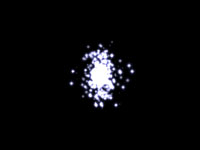 |
3.3
This tutorial shows how to load and render one of the
included particle systems in the tutorial distribution. It simply loads
in the particle system and adds it to X-VP’s Scene Graph.
|
|
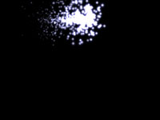 |
3.3.1
Using the particle system from the last tutorial, this
tutorial attaches an Animation Controller to the particle system and plays an
animation track to cause the particle system to buzz around on the screen.
|
|
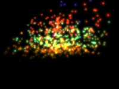 |
3.3.2 In this
tutorial, a particle system with a cylindrical emitter is spun via the Physics
Controller.
|
|
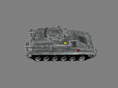 |
3.4
Most tutorials so far have used the same camera file
for the main camera. It was aligned at the world origin and exported from
3D Studio Max. In this tutorial, we load in 4 new cameras which have been
positioned around a tank model. By pressing the cursor keys you can
switch between the 4 cameras.
|
|
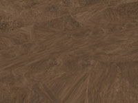 |
3.4.1
In this tutorial, we attach an animation controller to
a camera. The camera flies around the cave via the controller.
|
|
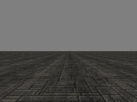 |
3.4.1 In this
tutorial we attach a Physics Controller to the camera. You can use
the cursor keys to move and turn the camera.
|
Section 4 - Vertex and Pixel Shaders
While X-VP can use existing fixed function pipeline
methods, it can also easily support the programmable pipeline via vertex and
pixel shaders written in various languages. The Controller Framework is
meant to handle vertex and pixel shaders and there relationship with scene
objects. This section focuses on integrating shaders within X-VP.
| 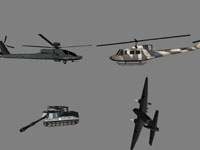 |
4.1
This tutorial demonstrates how to write vertex/pixel
shaders within X-VP’s Node/Controller Framework by implementing a simple
per-vertex lighting render controller. The render controller is attached
to models, which causes their geometry to be affected by the shader.
|
| 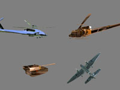 |
4.2
This tutorial demonstrates how to write vertex/pixel
shaders within X-VP’s Node/Controller Framework by implementing a cubic
environment mapping render controller. The render controller is attached
to models, which causes their geometry to be affected by the shader.
|
| 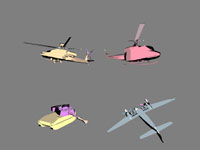 |
4.3
This tutorial demonstrates how to write vertex/pixel
shaders within X-VP’s Node/Controller Framework by implementing a cel shading
render controller. The render controller is attached to models, which
causes their geometry to be affected by the shader.
|
| 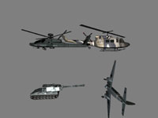 |
4.4
This tutorial demonstrates how to write vertex/pixel
shaders within X-VP’s Node/Controller Framework by implementing a per-pixel
lighting render controller. The render controller is attached to models,
which causes their geometry to be affected by the shader.
|
Section 5 - The User Interface Framework
X-VP contains an entire framework dedicated to
presenting 2D/3D user interfaces and handling user activity. Section 5
works through several examples that describe how to use the framework.
| 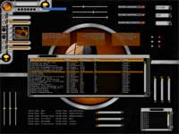 |
5.1
This tutorial lumps together various examples of the
user interface elements that an X-VP User Interface can contain including push
buttons, list views, list boxes, combo boxes, spinners, scroll
bars, progress bars, toggle buttons, sliders, sprites, animated sprites,
movies, cursors, text boxes, tooltips, etc... The user interface
elements are 100% graphically customizable. You can also customize sounds
played for different events such as "button down", "button up" or "button
over".
Once you define a user interface layout in screen
coordinates, X-VP automatically takes care of other resolutions and scales
controls automatically. This means you define everything once and X-VP
handles all other display modes.
This UI layout as well as the event hooks are
specified by a lua script. UI controls are described by small,
lightweight XML descriptions that define their look and feel.
|
| 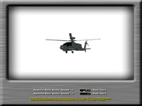 |
5.2
In this tutorial, we integrate a 2D interface with a
3D scene. We build a user interface that contains two text boxes.
The text boxes will obtain the focus when clicked and allow you to enter
data. The data entered affects the rotor speeds of the Apache
Helicopter.
|
Section 6 - Playing Audio
X-VP has a wide range of audio playback
capabilities. This section describes those capabilities.
| NO PICTURE |
6.1
This tutorial demonstrates how to create and play
sound files. By pressing the number keys 1-5 you can play various sound
and music files.
|
| NO PICTURE |
6.2
This tutorial shows how to modify properties of a
sound such as volume, pitch and looping state. By pressing certain keys
you can toggle different settings for each sound. See the code for which
keys to press.
|
| NO PICTURE |
6.3
This tutorial demonstrates how to use 3D sound with
X-VP and adjust its properties. It plays a sound clip and moves it around
the listener in a circle.
|
Section 7 - Input Devices
X-VP supports many types of devices for gathering user
input including keyboards, mice, joysticks and gamepads, etc. This
section is devoted to explaining input devices within X-VP.
| 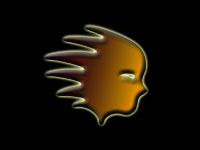 |
7.1
This tutorial demonstrates various
keyboard functions. It places a sprite on the screen and allows you to
control it with the cursor keys.
|
| |
7.2
This tutorial demonstrates various
mouse functions. It places a sprite on the screen and allows you to
control it with mouse movement, buttons and wheel.
|
| |
7.3
This tutorial demonstrates various
joystick/gamepad functions. It places two sprites on the screen and
allows you to control them via analog sticks present on the gamepad.
|
| |
|
Section 8 - Networking
X-VP ships with support for UDP and TCP networking as
well as a pre-built client/server network model/framework. This section
discusses various networking components within X-VP.
Section 9 - Advanced Scene Nodes and Controllers
This section provides more advanced examples on using
the Scene Node/Controller Framework.
| 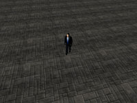 |
9.1
This tutorial creates a look-at
constraint controller that will cause a Scene Node to track its target.
The controller is attached to the camera and targeted towards a walking skin
mesh. You can use the cursor keys to move the skin mesh.
|
| 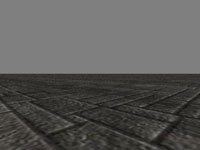 |
9.2
This tutorial creates an update
controller that is meant to control a camera similar to First-Person-Shooter
games. This controller is attached to the camera in the scene and you can
use the mouse and W, A, S, D keys to walk, strafe and look around. A
floor model is loaded in to give a sense of movement to the scene.
|
| 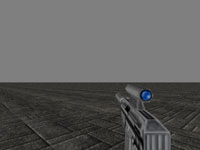 |
9.3
This tutorial adds to the previous
tutorial by creating a controller that will “attach” a model to the camera as
the camera is moved around the first-person-shooter controller created
earlier. A gun model is “attached” to the camera. Controls are
similar to 9.2.
|
Section 10 - Miscellaneous
The section showcases other bits of functionality in
X-VP that don't necessarily relate to the previous sections.